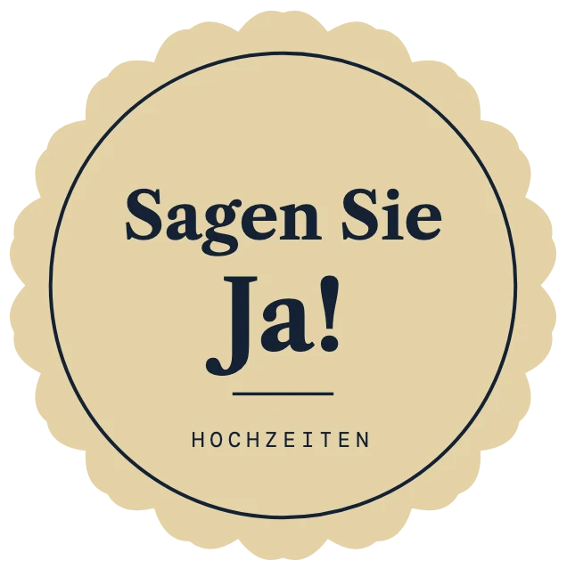
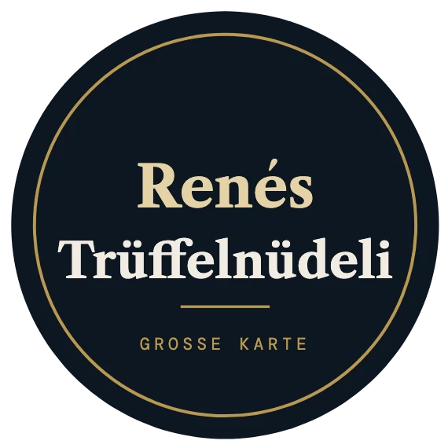
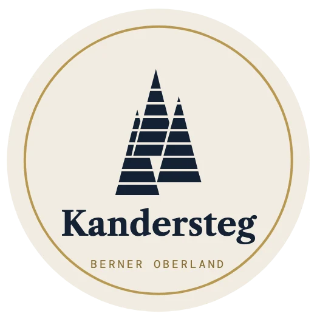
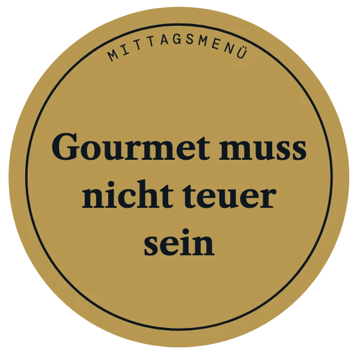
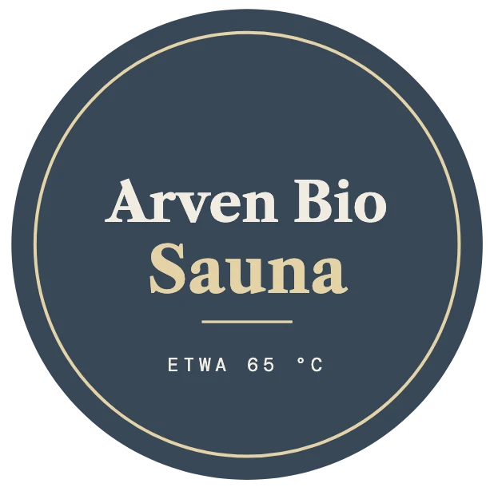
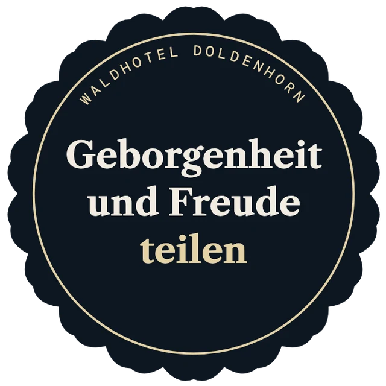
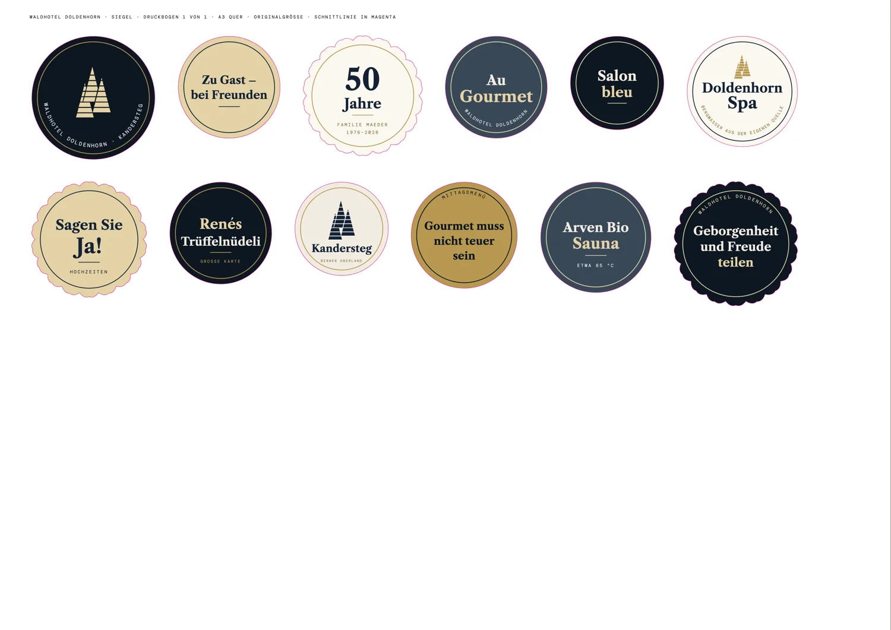

Ideen für Papier
Zwölf Siegelfür Geschenke.
In Ihrem Haus wird viel verschenkt: Gutscheine, Trüffelpralinen, ein Blumenstrauss zur Ankunft. Dazu passen Siegel, die ein Couvert oder ein Päckchen verschliessen. Hier sind zwölf Ideen dafür, mit den drei Tannen und Sätzen von Ihnen.
Die Siegel
Rund odermit Wellenrand.
Nachtblau, Papier und Gold kommen von Ihrer neuen Seite, das Blaugrau aus dem Au Gourmet. Die Worte stammen von Ihrer Website und aus Ihrem Hausmagazin.
Die drei Tannen
Ihr Zeichen in Gold auf Nachtblau.
60 × 60 mmZu Gast – bei Freunden
Ihr Leitsatz.
50 × 50 mm
Fünfzig Jahre
Für das Jubiläumsjahr der Familie.
58 × 58 mmAu Gourmet
Im Blaugrau der Wände Ihres Restaurants.
50 × 50 mmSalon bleu
Für den blauen Salon.
46 × 46 mmDoldenhorn Spa
Mit Ihrem Satz zum Bergwasser.
54 × 54 mm
Sagen Sie Ja!
Für Hochzeiten im Haus.
56 × 56 mm
Renés Trüffelnüdeli
Ein Gericht von Ihrer Grossen Karte.
50 × 50 mm
Kandersteg
Die Tannen und der Ort.
46 × 46 mm
Gourmet muss nicht teuer sein
Der Titel Ihres Mittagsmenüs.
52 × 52 mm
Arven Bio Sauna
Für die Sauna aus altem Arvenholz.
54 × 54 mm
Geborgenheit und Freude teilen
Ein Satz von Ihrer Zimmer-Seite.
60 × 60 mm
Für die Druckerei
DerDruckbogen.
Alle Siegel liegen in Originalgrösse auf ein Bogen im Format A3, mit einer Schnittlinie je Stück. Dazu gibt es jedes einzeln als PDF.
12 Siegel · 46 bis 60 mm · Schnittlinie in Magenta

Dazu gibt es neunzehn Drucksachen und Ihre Unterlagen im selben Stil.